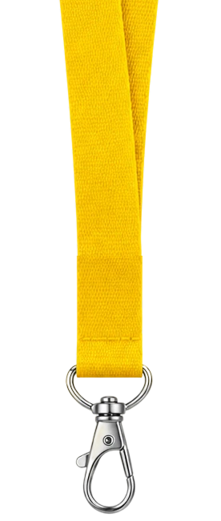
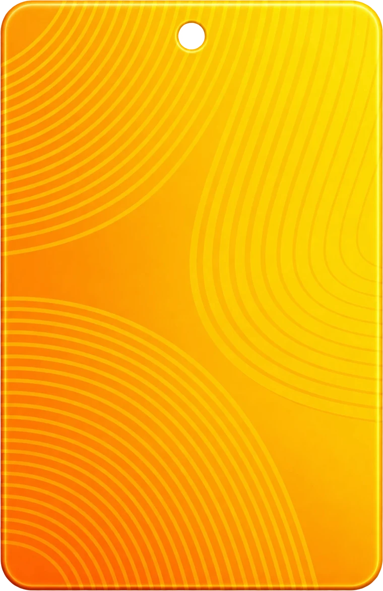

Product design · CRO audits
Digital products that people understand and use
Product design and conversion diagnosis for websites, apps and complex platforms. From early ideas to measurable improvements.


My Services
Find out why visitors aren't converting, or design a new product or improve an existing one.
Behavioral CRO Diagnosis
Understand why users hesitate, where conversion breaks down, and what to improve.
An evidence-based review of your website or digital product to uncover the behavioral barriers behind lost conversions, with clear explanations and actionable recommendations.
Product Design
Create and improve digital products with thoughtful UX and clear user journeys.
From early-stage products to complex SaaS platforms and AI-powered tools, I turn business requirements and user needs into intuitive, build-ready experiences.
What I work on
Complex products, made clear.
From early-stage concepts to established platforms, I help teams make digital products easier to understand, navigate and use.
- SaaS & enterprise platformsComplex workflows, dashboards, data-heavy tools
- AI-powered productsAI tools, copilots, interfaces for intelligent systems
- Web & mobile applicationsNew products, redesigns, user journeys
- Digital services & commerceMarketplaces, e-commerce, customer-facing services
Understand first. Design with intent.
A clear process, whatever the size of the project.
- 01
Understand
We start with your business goals, your users and the constraints, plus any research or data you already have.
You get: a shared brief and clear priorities.
- 02
Define
I map the problem, the user journeys and the scope, so the whole team knows what is being built and why.
You get: user journeys, information architecture and scope.
- 03
Design
From wireframes to high-fidelity UI and a design system, checked against real user needs and your business goals.
You get: prototypes, UI design and a design system.
- 04
Deliver
I prepare build-ready designs and stay close to the team, so what ships matches what was designed.
You get: specs, handoff and design review.
Real problems. Thoughtful solutions.
Case studies from SaaS, AI and enterprise products. Projects marked with a lock open with an access code.


Why visitors leave a platform that promises no agents
A behavioral conversion diagnosis of an agent-free property platform in Dubai, with a look inside the report.
Trust and retention in a verification flow
How a quiet policy change broke trust with verified candidates on a talent platform, and what to fix.
Pricing page conversion optimisation
How unclear plans and inconsistent prices break trust on an AI PDF editor's pricing page before the user pays.
Sign-up page conversion redesign
Why the sign-up page of a B2B SaaS platform was leaking conversions, and what a redesign changes.
Budget tracking mobile app
An app for tracking bills, recurring payments and monthly spending.
AI product builder for creators
An AI-assisted creation flow that helps digital creators build and launch their products.
Automotive website redesign
A concept redesign of a luxury car model's website.
Creator community platform
All-in-one platform where creators build communities, sell, and engage their audience.
Climate risk data portal
Portal for exploring climate risk data by country.
Digital asset management system
Enterprise DAM to organize, tag, and share media at scale.
Trusted by founders and product teams
A few words from the people I've worked with.
“She thinks about what’s realistic for the developers, what gives users the best experience and what will convert, and finds a good balance between them. That makes her designs easy to actually build.”
“Olga is a phenomenal designer who truly bridges the gap between user needs and business goals. She seamlessly tackles diverse feature sets, ensuring every interface feels intuitive and completely aligned with Customer core vision.”
“Olga’s contributions drove our revenue growth and helped us reach new annual milestones. She played a key part in turning our custom development into our first SaaS product.”
“Olga is company Dr. House. She simplifies complex, seemingly impossible tasks and delivers elegant solutions. Her real strength is turning massive amounts of data into readable, user-friendly interfaces.”
“A well-trained, uniquely gifted and emotionally intelligent expert in her field. Her knowledge and talent for big data visualisation are in high demand among DesignLab students.”
“Working with you was a solid experience. Delivered great UX work in a short timeframe and genuinely exceeded my expectations.”
“Your ability to balance user needs with business goals is truly impactful.”
Product Design & CRO Notes
Insights on SaaS and AI products, UX, conversion research, and building tools people actually use, for designers, founders, and product teams.
Know your product before you measure it
You don’t need a sophisticated analytics setup to tell whether your SaaS works. How to map the user journey, choose the metrics that matter, and find problems when you have little or no data.
Read articleHow to find UX problems in your SaaS product using analytics
Analytics can tell you where users abandon a workflow, but rarely why. How to find UX problems in SaaS products and dashboards, investigate their causes, and prioritize fixes with evidence.
Read articleWhy SaaS free trials don’t convert: a diagnostic framework
Low trial-to-paid conversion is a symptom, not a diagnosis. How to find where users drop off, which users fail to convert, and what the evidence says about why.
Read articleCRO audit vs. UX audit: what’s the difference?
Both start with many of the same tools. What separates them is the question they’re built around, and that decides what you get back. How to tell them apart and judge an audit proposal.
Read articleFrequently asked questions
Choose the topic that matches what you need help with.
What is a CRO audit?
A CRO audit is a structured diagnosis of your website or digital product to identify what may be preventing users from taking the desired action. I examine the user journey, messaging, information structure, trust signals, and available behavioral evidence to identify conversion barriers and recommend what to improve.
What’s included in the audit?
You’ll receive evidence-based findings, an explanation of why each issue matters, prioritized recommendations, and guidance on what to improve. Every package also includes a 20-minute Loom video in which I walk you through the findings, explain the key problems, and discuss how to address them.
The audit is a diagnostic service, not a redesign or implementation project. It doesn’t include final design files, implementation, or post-change results verification.
How do I choose the right audit scope?
Single Page Audit focuses on one page, such as your homepage or a product landing page.
Full Conversion Flow covers up to six steps in a user journey, from the initial touchpoint to the intended conversion, such as a purchase, sign-up, or demo request.
E-commerce Flow examines the shopping journey from the homepage to the completed purchase.
Not sure which scope fits? Book a free introductory call to discuss your product and goals.
Do I need to provide analytics access?
No. Analytics tools such as GA4, Hotjar, or Microsoft Clarity can help strengthen the diagnosis, but they’re not required. Without analytics, I examine the user journey and product experience directly. Findings and recommendations reflect the evidence available.
How long does an audit take?
- Single Page Audit: 48 hours
- Full Conversion Flow: 3–5 business days
- E-commerce Flow: 4–6 business days
The timeline starts once payment is received and all necessary access and materials have been provided. Rush delivery is available for an additional fee.
What’s your refund policy?
If the audit doesn’t meet your expectations, I’ll return your full payment, no questions asked. I stand behind the quality of my work.
What types of digital products can be designed?
Product design can cover websites, mobile applications, SaaS products, enterprise platforms, internal tools and AI-powered applications. The scope depends on the product's complexity, audience and business objectives.
Can an existing product be redesigned?
Yes. Product redesign can address usability issues, confusing navigation, inefficient workflows, inconsistent interfaces or changing business requirements. The work begins with understanding the current experience and identifying what needs to improve.
Can product design start from an idea?
Yes. Early-stage product design can include defining the core user journey, structuring functionality, creating wireframes and developing prototypes before full development begins.
What does a product design project include?
Deliverables may include research, information architecture, user flows, wireframes, prototypes, UI design, design system components and development specifications. The exact scope is defined according to the project.
How much do product design services cost?
The cost depends on the product's complexity, project scope, timeline and required deliverables. An estimate can be provided after the project requirements and expected outcomes are clarified.
Have a product challenge?
Tell me what you're working on: what you're building, where it gets stuck, and what you'd like to change. I'll reply personally.